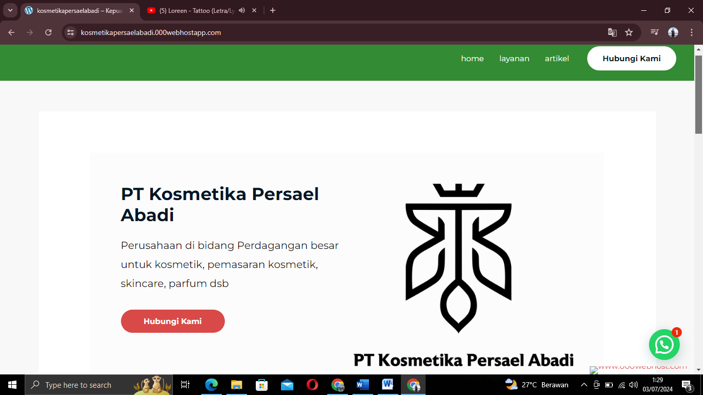
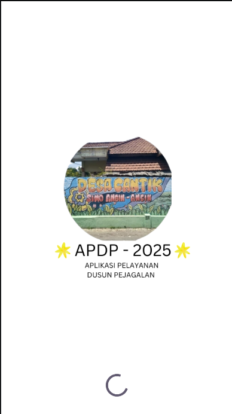

company profile website PT kosmetika Persael Abadi

I developed the homepage of PT Kosmetika Persael Abadi's website, emphasizing functionality and user experience. The Home, Services, and Articles menu structures were designed to ensure easy navigation, organized information presentation, and efficient content integration. This project demonstrated my ability to design and implement responsive, user-oriented, and business-oriented web solutions—a relevant competency to support the digitalization and system development process in the Bank BUMN ODP program
RT Service Application Study Case Pejagalan Hamlet RT 10 RW 04 Wonoayu District

Android Application for Digitizing Neighborhood Association (RT/RW) Administration
This application is designed to simplify the digital management of administration and public services at the neighborhood association (RT/RW) level. Features include resident data management, financial record keeping, and an electronic correspondence system to support transparency and efficiency in public services. The system is built using Laravel for the backend, Vue.js for the frontend, and MySQL as the main database. This application is available in mobile format (Android) for easy access by both administrators and residents.t
Desktop-Based Tuition Payment with Automatic NISN Feature For Ngimbangan Elementary School, Mojosari District
 This desktop-based tuition payment application was developed using Visual Basic (VBA) macros in Microsoft Excel to simplify school administration processes. The system features an automatic National Student Registration (NISN) feature, allowing student data to be detected and displayed quickly without manual input.
Key features include payment recording, checking paid/overdue status, automatic report generation, and data validation to minimize input errors. This project demonstrates the ability to build a simple, efficient, structured, and easy-to-use desktop solution for operational needs
This desktop-based tuition payment application was developed using Visual Basic (VBA) macros in Microsoft Excel to simplify school administration processes. The system features an automatic National Student Registration (NISN) feature, allowing student data to be detected and displayed quickly without manual input.
Key features include payment recording, checking paid/overdue status, automatic report generation, and data validation to minimize input errors. This project demonstrates the ability to build a simple, efficient, structured, and easy-to-use desktop solution for operational needs